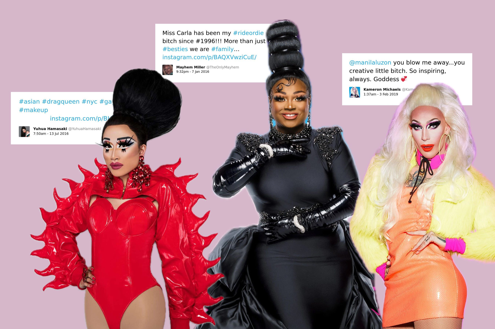
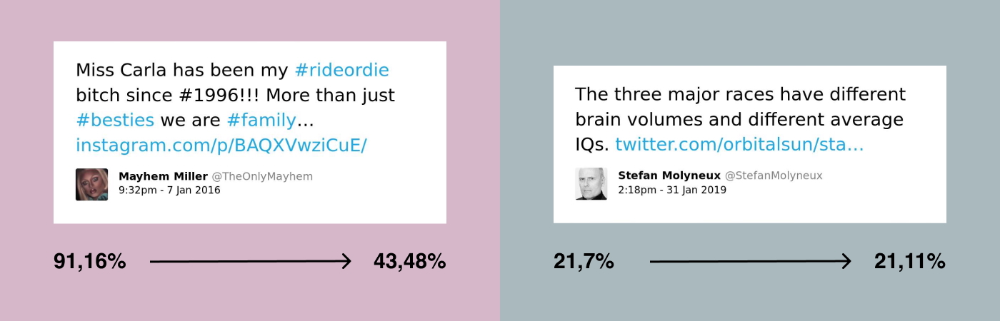

¡Escándalo! Toxicity classifiers vs drag queens
With the words «I don't need luck. I'm about to slay this thing» drag queen Miss Vanjie is off to conquer the judges of RuPaul's Drag Race. «That's 33% toxic language. Would you like to block it?» — says the AI. Here's a look at why toxicity classifiers are sometimes prone to be toxic themselves.
This is a translation of an article originally published in the Системный Блокъ magazine. Machine learning has become a conventional tool for moderating toxic content on social media. Algorithms for classifying toxic posts were created with the intention to make social media platforms a more comfortable and safe place to communicate. However, their use can threaten the free speech of small and often discriminated social groups - for example, ethnic minorities, LGBTQ+ or drag community. This article investigates why algorithms don't like drag queens and support nationalist views.
Toxicity classifiers — who are they and why are they needed
Toxic communication is defined as a display of hatred and rudeness in communication that is highly likely
to cause the other person to leave the dialogue. Extracting toxicity from text can be tricky — especially when
you're a disembodied being operating with 0's and 1's. Here the transformer architecture and supervised learning come to the rescue.
Let's say we've taught the model to recognise «toxicity». How can it be useful in the context of social networks? Here are some options:
Such use cases are suggested by Perspective, a service from Jigsaw (a Google's subsidiary) that identifies toxic content using machine learning.
From the Perspective's perspective
Perspective is a free API that gives access to a machine learning model based on the multi-lingual BERT neural network
that evaluates the toxicity of input text. The model is trained on millions of comments from a variety of sources,
including Wikipedia and The New York Times, in 18 languages. Each comment in the training dataset is marked up manually
by 3–10 native speakers according to given instructions. In particular, to determine the toxicity of a comment, the tagger
is asked to select one of four options: «Very toxic», «Toxic», «Not sure», or «Not toxic». All scores are then normalised and
averaged, resulting in a score between 0 and 1 that indicates the likelihood of the comment being toxic.
The very process of training the model points to its potential weaknesses related to the training dataset (specific nature of sources,
influence of social and historical factors, underrepresentation of smaller social groups) and the human factor (small number of raters,
their biases, ambiguity of question wording) [1]. Although the developers of the service do not recommend using it for fully automated
moderation, said disadvantages can still lead to undesirable consequences.
Distinct characteristics of minority vocabularies
To quote Bob the Drag Queen, «Drag = making art + blurring gender boundaries». Drag culture is characterised by flamboyance, loudness and provocation.
The same can be said about the drag sociolect, which contains an abundance of foul language and gender insults, often used in positive connotations.
The literature on queer linguistics [2, 3, 4] sees such «parodic rudeness» as a manifestation of the resistance to stigmatisation
and a way of strengthening solidarity within the community. For example, the word bitch is used in many cases as a laudatory feminitive:
«I've been the number one bitch in the game for 25 motherfucking years», «From this moment on, you belong to a sisterhood of badass bitches» (RuPaul).
And the expression to crack someone's face means not to physically deform the forepart of someone's head, but to discourage with a witty, timely remark.
However, algorithms that have seen very few examples of such content during the training stage are highly unlikely to be immersed in this context.
Internet researchers decided to test how Perspective would cope with the classification of such specific vocabulary.
The tweets of RuPaul's Drag Race participants and, for comparison, «white supremacy» supporters were evaluated. On average, drag queens' posts received
a toxicity score from 16.68% to 37.81%, while nationalists' posts were scored from 21.30% to 28.87%. It might seem like a small difference. However,
if we look at the scores of individual words, we can see the algorithm's bias towards neutral terms of queer identity. Specifically,
the words gay, lesbian and queer were assigned high toxicity with probabilities of 76.10%, 60.79% and 51.03% respectively.
In some cases, Perspective recognised positive tweets as highly toxic — and vice versa.
Can anything be done about it?
The creators of the model recognise the problem of its bias. Thus, the article [5] that introduces the new generation of the classifier, particularly investigates the influence of keywords characterising identity. Experiments show that even though the new version of the model still attributes high toxicity to texts containing identity terms (race, gender, sexuality, religion, health limitations) of vulnerable groups. The authors promise to continue the search for ways to make a model that is intended to fight toxicity less toxic itself.
In conclusion
Despite all the limitations, the increasing volumes of training data and fine-tuning of the parameters are gradually doing their job. Toxic content classifiers are indeed becoming more «favourable» to drag speech. The latest version of Perspective now sees less negativity in drag queens' tweets from the original article. But the model still fails to deal with the «subtle» toxicity embedded in more neutral texts.
The danger here is not only that minority voices will not be heard, but also that a destructive rhetoric will continue to spread. So when training models involved in social media moderation, it is important to immerse them in the contexts of different communities, therefore ensuring representativeness in the data.
Sources
- Anna Schmidt, Michael Wiegand. A survey on hate speech detection using natural language processing. // Proceedings of the Fifth International Workshop on Natural Language Processing for Social Media. 2017. Pp. 1–10. DOI: https://doi.org/10.18653/v1/W17-1101. URL: https://aclanthology.org/W17-1101.
- Sean McKinnon. “Building a thick skin for each other”. The use of ‘reading’ as an interactional practice of mock impoliteness in drag queen backstage talk // Journal of Language and Sexuality. 2017. Vol. 6. Issue 1. Pp. 90–127. DOI: https://doi.org/10.1075/jls.6.1.04mck. URL: https://www.jbe-platform.com/content/journals/10.1075/jls.6.1.04mck.
- Richard G. Jones, Jr. Drag Queens, Drama Queens, and Friends: Drama and Performance as a Solidarity-Building Function in a Gay Male Friendship Circle // Kaleidoscope. 2007. Vol. 6. Pp. 61–84. URL: https://www.academia.edu/31804660/Drag_Queens_Drama_Queens_and_Friends_Drama_and_Performance_as_a_Solidarity-Building_Function_in_a_Gay_Male_Friendship_Circle.
- Natacha Marjanovic. “Be Proud, and Loud”: Linguistic Markers of Pride in Drag Queens’ Spoken Discourse. // Discours. 2023. Issue 32. DOI: https://doi.org/10.4000/discours.12425. URL: http://journals.openedition.org/discours/12425.
- Perspective API. 2021–2025. URL: https://www.perspectiveapi.com/.
- Alyssa Lees, Vinh Q. Tran, Yi Tay, Jeffrey Sorensen, Jai Gupta, Donald Metzler, and Lucy Vasserman. A New Generation of Perspective API: Efficient Multilingual Character-level Transformers // Proceedings of the 28th ACM SIGKDD Conference on Knowledge Discovery and Data Mining. 2022. Pp. 3197–3207. DOI: https://doi.org/10.1145/3534678.3539147. URL: https://arxiv.org/pdf/2202.11176k.
- Alessandra Gomes, Dennys Antonialli, Thiago Oliva. Drag queens and Artificial Intelligence: should computers decide what is ‘toxic’ on the internet? // Interlab. 2019. URL: https://internetlab.org.br/en/news/drag-queens-and-artificial-intelligence-should-computers-decide-what-is-toxic-on-the-internet/.